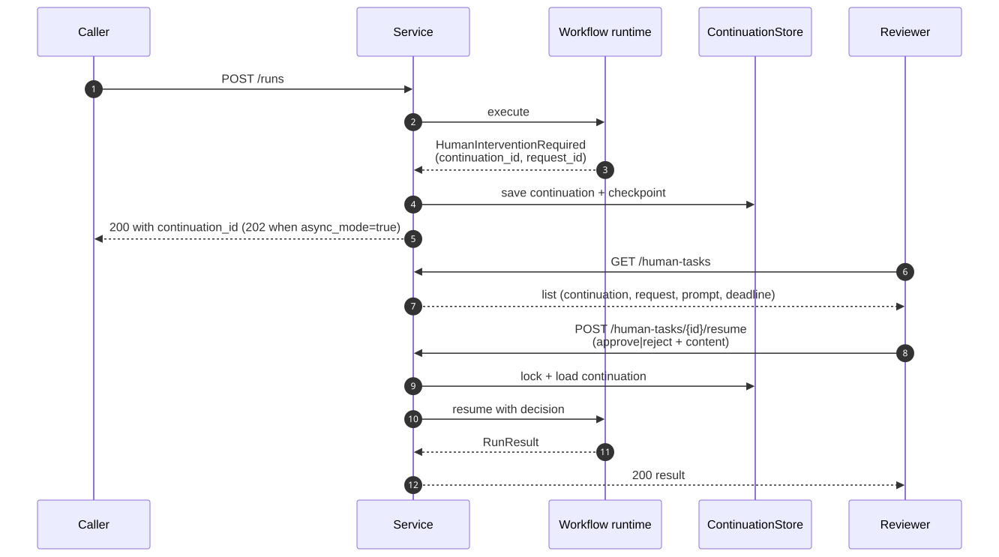

Kneo Agent Platform
Tutorial
Quickstart, custom-tool tutorial, PostgreSQL deployment tutorial, and the human-in-the-loop walkthrough — one printable reading path.
Table of contents
- Table of contents2
- Quickstart4
- Tutorial: writing a custom tool end-to-end8
- Tutorial: deploying with PostgreSQL from zero15
- Prerequisites15
- 1 · Clone and prepare the env file15
- 2 · Validate the env file16
- 3 · Start the Compose stack16
- 4 · Verify readiness16
- 5 · Run the deployment smoke17
- 6 · Submit a real run18
- 7 · Verify persistence survives restart18
- 8 · Capacity tuning knobs18
- 9 · Backup the database19
- 10 · Tear down19
- Common failure modes20
- Where to go next20
- Human-in-the-loop walkthrough21
- What "human-in-the-loop" means here21
- 1 · Declare a human step in a spec21
- 2 · Run the workflow until pause22
- 3 · List and inspect pending tasks23
- 4 · Resume with a decision23
- 5 · Idempotent resume24
- 6 · Process-safe locking24
- 7 · Audit trail24
- 8 · Recovery after restart25
- 9 · Timeouts and escalation25
- Common failure modes25
- See also26
Quickstart
Source: docs/user/quickstart.md
A guided walkthrough that takes you from a fresh checkout of Kneo Agent
Platform (kneo-serv) to a running agent — locally and through the
service — in about 15 minutes. By the end you'll have validated a spec, run
an agent, exercised a human-in-the-loop pause, and called the same workflow
over HTTP.
This expands on the README quickstart; pick either entry point.
Prerequisites
- Python 3.12+ (
python --version). - An OpenAI-compatible API key for the demo spec (
OPENAI_API_KEY). Other providers work, but the example uses OpenAI. - Optional: Docker, if you want to follow the service path with PostgreSQL.
1. Install
git clone git@github.com:kneo-agent/kneo-serv.git
cd kneo-serv
python -m venv .venv && source .venv/bin/activate
python -m pip install -e ".[dev]"
Verify the CLI is on your PATH:
kneo --help
If you don't have an OpenAI key handy, swap to the dummy provider used by the smoke test (see § 5 below).
2. Validate and compile a spec
The repo ships a runnable research-agent spec.
kneo spec validate examples/research_agent.yaml
kneo spec compile examples/research_agent.yaml
validate runs schema + semantic checks and prints diagnostics; compile
goes further and constructs the agent and workflow objects without
running them. Both should exit 0.
If validation fails, the diagnostic message includes a path into the spec
(agent.tools[0], etc.) and a short reason. The most common causes are
listed in troubleshooting.md § 6.
3. Run locally
export OPENAI_API_KEY=sk-...
kneo run examples/research_agent.yaml \
--input "Summarize Nvidia's AI strategy in three bullet points" \
--target workflow
Local runs persist state at .kneo/kneo_runs.sqlite and continuations
under .kneo/continuations. Inspect them:
kneo runs get <run_id>
kneo runs trace <run_id>
kneo runs checkpoints <run_id>
The run output lands in RunResult.output_text; the CLI also prints it on
stdout by default. Use --json to get the full structured response.
4. Try a human-in-the-loop workflow
kneo run examples/human_approval_workflow.yaml \
--input "draft the launch announcement" \
--target workflow --json
The JSON response includes a continuation_id and a request_id. Resume
with an approval:
kneo human resume <continuation_id> --request-id <request_id> --approve
For a deeper end-to-end walkthrough, see human_in_the_loop.md.
5. No real provider: the dummy path
The smoke spec uses the in-process dummy provider so it runs without real
credentials.
kneo run examples/smoke_human_workflow.yaml \
--input "smoke" --target workflow --json
This is the same flow the deployment smoke exercises; see
deployment_smoke.md.
6. Run as a service
In one terminal, start the API:
export KNEO_SERV_AUTH_ENABLED=true
export KNEO_SERV_API_KEYS='operator:operator-token:operator'
kneo service serve --host 127.0.0.1 --port 8000
In another, hit the API:
export KNEO_SERV_API_KEY=operator-token
curl -sf http://127.0.0.1:8000/livez
curl -sf http://127.0.0.1:8000/readyz | jq
Submit a run through the CLI's service mode:
kneo run examples/smoke_human_workflow.yaml \
--service-url http://127.0.0.1:8000 \
--input "hello" --target workflow --json
Or directly with curl:
curl -sf -X POST http://127.0.0.1:8000/v1/runs \
-H "Authorization: Bearer $KNEO_SERV_API_KEY" \
-H 'Content-Type: application/json' \
-d '{
"input": "hello",
"spec_path": "examples/smoke_human_workflow.yaml",
"target": "workflow"
}'
For the full HTTP contract, see service_api.md. For deployment topology (Docker, Compose, PostgreSQL), see deployment.md.
7. Use a profile for repeated calls
CLI profiles save --service-url and --api-key so you don't type them on
every command.
kneo config profile set local \
--service-url http://127.0.0.1:8000 \
--api-key operator-token
kneo config profile use local
kneo run examples/smoke_human_workflow.yaml \
--input "hello" --target workflow --profile local
kneo human list --profile local
Profiles live at ~/.kneo_serv/profiles.json (or
KNEO_SERV_PROFILES_PATH) with owner-only file permissions. Stored
tokens are never printed by the CLI.
Where to go next
| You want to… | Go to |
|---|---|
| Write your own spec | examples.md, project_config.md |
| See every CLI subcommand and flag | cli_reference.md |
| Read the full HTTP contract | service_api.md |
| Deploy with Docker / Compose / PostgreSQL | deployment.md |
| Tune env vars | environment.md |
| Diagnose a failure | troubleshooting.md |
| Add a custom tool, runtime, or store | extending.md |
| Understand the architecture | design.md |
| Look up jargon | glossary.md |
Tutorial: writing a custom tool end-to-end
Source: docs/user/tutorial_custom_tool.md
Build a simple custom tool, register it with kneo-serv, expose it in a YAML
spec, run an agent that calls it, and verify how the call shows up in audit
and trace events.
This tutorial walks the path from "I have a Python function" to "an agent uses it in production" so you can see every layer the call passes through.
For the recipe-style summary, see
extending.md § 1. For the public-API
surface, see
implementation_map.md § tools/.
What we're building
A lookup_user tool that takes a user id and returns the user's
email. We'll start with a function, register it as a tool, and run a
small agent that uses it.
1 · Write the Python function
Create examples/my_tools.py (or anywhere on the import path):
# examples/my_tools.py
from typing import Any
USERS = {
"u-001": "alice@example.com",
"u-002": "bob@example.com",
"u-003": "carol@example.com",
}
def lookup_user(args: dict[str, Any]) -> str:
"""Return the email for a user id, or 'unknown' if not present."""
user_id = args.get("user_id")
if not user_id:
return "unknown: user_id is required"
return USERS.get(user_id, f"unknown: {user_id}")
Two things to notice:
- The handler signature is
Callable[[dict[str, Any]], str]. Args arrive as a dict; the return value must be a string. The framework wraps it as aToolResult. - The function should be deterministic and side-effect-free where
possible. If it does I/O, plan for retries and timeouts (see
environment.md§ Runtime Reliability).
2 · Register the tool with ToolRegistry
Tools live in a ToolRegistry. The default service registry is built
in service/factory.py; to
add a custom tool you need a registry that includes it. The cleanest
approach is to construct a custom registry and pass it into the
platform manager.
Create examples/my_factory.py:
# examples/my_factory.py
from kneo_serv.platform import PlatformManager
from kneo_serv.spec import SpecCompiler
from kneo_serv.service.factory import (
create_runtime_registry,
create_tool_registry,
create_persistence_stores,
)
from kneo_serv.tools import ToolDefinition
from examples.my_tools import lookup_user
def build_platform() -> PlatformManager:
runtime_registry = create_runtime_registry()
tool_registry = create_tool_registry(include_examples=True)
tool_registry.register(
ToolDefinition(
name="lookup_user",
description="Return the email for a user id.",
parameters={
"type": "object",
"properties": {"user_id": {"type": "string"}},
"required": ["user_id"],
},
),
lookup_user,
)
compiler = SpecCompiler(
runtime_registry=runtime_registry,
tool_registry=tool_registry,
)
run_state, continuation = create_persistence_stores()
manager = PlatformManager(
compiler=compiler,
run_state_store=run_state,
continuation_store=continuation,
)
manager.start_worker()
return manager
The parameters schema is JSON Schema. The agent's tool-call planner
sees this — be explicit about types, required fields, and enums. The
guarded tool registry applies any policy from the spec on top of this
definition, so you don't need to enforce auth here.
3 · Reference the tool from a spec
Create examples/lookup_agent.yaml:
version: v1
agent:
name: directory-agent
system_prompt: |
You answer questions by looking up users with the lookup_user tool.
Return concise, factual answers.
model:
provider: openai
name: gpt-4o-mini
strategy:
type: react
max_iterations: 4
runtime_preferences:
preferred_mode: bridge
allowed_modes: [bridge]
tools:
include: [lookup_user]
workflow:
type: sequential
name: lookup-pipeline
steps:
- id: answer
kind: agent
ref: directory-agent
The tools.include list names tools the agent is allowed to call.
Names must match what we registered in step 2. Validate the spec:
kneo spec validate examples/lookup_agent.yaml
If you see E_UNKNOWN_TOOL, the spec is referencing a name that isn't
in the registry. Re-check step 2 — the registry must include
lookup_user before SpecCompiler runs.
4 · Run the agent
When using a custom factory, drive the agent through Python rather
than the bare kneo run command — the CLI's default platform
manager does not include your custom tool.
# examples/run_lookup.py
from examples.my_factory import build_platform
def main() -> None:
manager = build_platform()
result = manager.run_from_spec(
input_text="What's the email for u-002?",
spec_path="examples/lookup_agent.yaml",
target="workflow",
)
print(result.output_text)
if __name__ == "__main__":
main()
Run it:
export OPENAI_API_KEY=sk-...
python -m examples.run_lookup
Expected output (model wording will vary):
The email for u-002 is bob@example.com.
If the agent didn't call the tool, increase max_iterations or refine
the system prompt to instruct tool use.
5 · Inspect the call in trace and audit
The tool call shows up in the run trace. After the script exits, peek at the latest run:
kneo runs trace $(kneo runs --json | jq -r '.runs[0].run_id')
Look for tool_call_started and tool_call_completed events with
tool_name: "lookup_user". Tool arguments and results are not in
the trace by default — they're redacted at write time. To capture
them in OpenTelemetry spans for a specific deployment, opt in with
KNEO_SERV_OTEL_RECORD_ARGUMENTS=true and
KNEO_SERV_OTEL_RECORD_RESULTS=true (only after a data-classification
review; see environment.md § Observability).
The audit log records the run (not individual tool calls) at
run.created / run.cancelled / run.continued. Tool arguments are
not persisted in audit events under any flag — see
production_readiness_review.md § Audit Payload Review.
6 · Lock down the tool with policy
For production, restrict what the agent can do with your tool. Add to
the spec under agent:
agent:
# ... existing fields ...
policies:
tool:
allow:
- lookup_user
deny: []
network: false
filesystem: false
shell: false
The guarded registry blocks every tool not in allow, and
diagnostics check that registered tools don't claim capabilities
(network, filesystem, shell) inconsistent with the policy.
Validate and re-run; the policy is enforced at call time. A blocked
call surfaces as a tool_policy_denied trace event and never reaches
your handler.
7 · Ship the tool to the service
Two patterns:
-
In-process custom factory. Replace
service.factorywith your owncreate_default_platform_manager()that registers the tool. Runkneo service servefrom a deployment that imports your factory. This is the common shape; the Docker image is a thin wrapper aroundservice.app:create_app(configure_default_manager=True), and you can override the manager in your own entrypoint. -
Custom server. Construct the FastAPI app yourself with
create_app(configure_default_manager=False)and callkneo_serv.service.dependencies.set_platform_manager(your_manager)before serving. Useful when you want to register multiple tools, or combine custom auth + custom tools.
# examples/serve_lookup.py
import uvicorn
from kneo_serv.service.app import create_app
from kneo_serv.service.dependencies import set_platform_manager
from examples.my_factory import build_platform
if __name__ == "__main__":
set_platform_manager(build_platform())
uvicorn.run(create_app(), host="127.0.0.1", port=8000)
python -m examples.serve_lookup
curl -sf http://127.0.0.1:8000/livez
Now the same lookup_user tool is reachable from any spec that
references it, including service-backed CLI calls and HTTP POST /v1/runs.
Common pitfalls
| Symptom | Likely cause |
|---|---|
E_UNKNOWN_TOOL on kneo spec validate |
Custom tool isn't in the registry the CLI is using; use the Python entrypoint from § 4. |
ValueError: Tool 'X' has no implementation |
ToolDefinition.name doesn't match the spec's tools.include entry. |
| Agent never calls the tool | System prompt doesn't mention it, or max_iterations is too low. |
| Tool calls succeed but content is missing in trace | Expected — tool args/results are redacted by default. |
403 Forbidden when calling through service |
API key is missing the runs:write scope; see troubleshooting.md § 4.2. |
Next
- More examples and orchestration patterns:
examples.md. - Custom MCP servers (similar pattern, externally hosted tools):
extending.md§ 2. - Custom middleware around tool calls (rate-limiting, logging):
extending.md§ 3.
Tutorial: deploying with PostgreSQL from zero
Source: docs/user/tutorial_postgres_deployment.md
End-to-end deployment of kneo-serv against PostgreSQL using the bundled
Docker Compose stack: rendering env files, starting the service, verifying
readiness, and running smoke tests. Budget about 30 minutes from a fresh
checkout to a running deployment.
For the reference on deployment shapes and persistence selection, see
deployment.md. For environment-variable semantics, see
environment.md.
Prerequisites
- Docker 24+ and
docker compose. git,curl,jq, and a shell that supports$()substitution.python3≥ 3.12 for running the deployment-smoke script.- Network access to pull the
postgres:16and Python base images.
This tutorial uses 127.0.0.1; for a real deployment, substitute your host or load-balancer URL throughout.
1 · Clone and prepare the env file
git clone git@github.com:kneo-agent/kneo-serv.git
cd kneo-serv
cp deploy/production.env.example deploy/production.env
chmod 600 deploy/production.env
deploy/production.env is gitignored — it'll hold your real secrets.
Edit it now and replace every replace-… placeholder. The minimum
set you must change before binding to a network:
# deploy/production.env
# Auth — replace each token with a high-entropy value.
KNEO_SERV_AUTH_ENABLED=true
KNEO_SERV_API_KEYS=operator:OP_TOKEN:operator;reviewer:REV_TOKEN:reviewer;viewer:VIEW_TOKEN:viewer
KNEO_SERV_ADMIN_API_KEY=ADMIN_TOKEN
KNEO_SERV_SPEC_SIGNING_KEY=SPEC_SIGNING_HMAC_KEY
# PostgreSQL — match the password to the one you'll set below.
POSTGRES_DB=kneo_serv
POSTGRES_USER=kneo_serv
POSTGRES_PASSWORD=DB_PASSWORD
Generate strong tokens:
# 32-byte hex tokens
for name in OP_TOKEN REV_TOKEN VIEW_TOKEN ADMIN_TOKEN SPEC_SIGNING_HMAC_KEY DB_PASSWORD; do
printf '%s=%s\n' "$name" "$(openssl rand -hex 32)"
done
Paste the generated values into deploy/production.env. Do not commit
this file.
2 · Validate the env file
There's a validator that catches common mistakes (placeholder tokens, incomplete scoped roles, missing DSN, telemetry payload capture left on by accident):
python scripts/validate_staging_env.py --env-file deploy/production.env
Address any errors before continuing. Common findings:
replace-…strings still present.- Scoped role list missing
operator,reviewer, orviewer. KNEO_SERV_OTEL_RECORD_ARGUMENTS=truewithout an explicit data-classification override.
3 · Start the Compose stack
The stack runs the API plus PostgreSQL with a persistent volume.
docker compose --env-file deploy/production.env up --build -d
--build rebuilds the API image so any local edits land. -d runs
detached. To watch logs:
docker compose logs -f api
You should see the API come up after PostgreSQL passes its healthcheck (about 10–20 seconds on a cold start). The API logs include a line per migration applied at first startup.
4 · Verify readiness
export BASE=http://127.0.0.1:8000
curl -sf "$BASE/livez"
curl -sf "$BASE/readyz" | jq
/livez returns {"ok": true, "metadata": {}} as soon as the process
accepts connections. /readyz returns 200 only after every dependency
check passes:
{
"ok": true,
"metadata": {
"ready": true,
"manager": "PlatformManager",
"checks": {
"run_state_store": {"name": "run_state_store", "ok": true},
"continuation_store": {"name": "continuation_store", "ok": true},
"queue": {"name": "queue", "ok": true},
"runtime_registry": {"name": "runtime_registry", "ok": true, "count": 3, "names": ["adapter", "bridge", "native"]},
"tool_registry": {"name": "tool_registry", "ok": true, "count": 4, "names": ["compress_history", "publish_report", "summarize", "web_search"]},
"providers": {"name": "providers", "ok": true},
"mcp": {"name": "mcp", "ok": true}
}
}
}
If you get a 503, the body identifies which check failed; see troubleshooting.md § 1.2.
5 · Run the deployment smoke
The smoke script exercises the full path: auth, spec validation, run creation, human resume, audit listing, credential inventory, and policy update.
export OP_TOKEN=<your-operator-token>
export REV_TOKEN=<your-reviewer-token>
export VIEW_TOKEN=<your-viewer-token>
python scripts/deployment_smoke.py \
--base-url "$BASE" \
--operator-token "$OP_TOKEN" \
--reviewer-token "$REV_TOKEN" \
--viewer-token "$VIEW_TOKEN"
A clean run prints each step with a PASS and exits 0. If any step
fails, the script identifies the failing endpoint and HTTP status.
See deployment_smoke.md for the full step list
and what each step verifies.
6 · Submit a real run
curl -sf -X POST "$BASE/v1/runs" \
-H "Authorization: Bearer $OP_TOKEN" \
-H 'Content-Type: application/json' \
-d '{
"input": "smoke",
"spec_path": "examples/smoke_human_workflow.yaml",
"target": "workflow"
}' | jq
This spec uses the in-process dummy provider so it runs without
provider credentials. You should see a paused response with a
continuation_id (the workflow has a human step). Resume it:
curl -sf -X POST "$BASE/v1/human-tasks/cont_…/resume" \
-H "Authorization: Bearer $REV_TOKEN" \
-H 'Content-Type: application/json' \
-d '{"request_id": "req_…", "decision": "approved"}' | jq
For the full HITL flow, see human_in_the_loop.md.
7 · Verify persistence survives restart
Confirm PostgreSQL volume persistence:
docker compose --env-file deploy/production.env restart api
sleep 5
curl -sf "$BASE/v1/runs?limit=5" \
-H "Authorization: Bearer $OP_TOKEN" | jq '.runs[].run_id'
You should see the run id from step 6 in the list, even after the API
container restarts. The data lives in the postgres-data named
volume, not the container layer.
8 · Capacity tuning knobs
For a real production deployment, revisit these env vars in
deploy/production.env after you have load profile data:
| Variable | Default | Tune when |
|---|---|---|
KNEO_SERV_PROVIDER_TIMEOUT_SECONDS |
120 | Provider tail latency exceeds default. |
KNEO_SERV_PROVIDER_RETRIES |
2 | Provider has documented transient error rate. |
KNEO_SERV_MAX_BODY_BYTES |
1 MiB | You receive larger inline specs or override payloads. |
KNEO_SERV_MAX_INPUT_CHARS |
20000 | Run inputs are larger than the default. |
KNEO_SERV_RETENTION_RUNS_DAYS |
unset | Storage growth requires capping run history. |
KNEO_SERV_CHECKPOINT_COMPRESS_BYTES |
64 KiB | Many large checkpoints; reduce to compress more. |
Full list and semantics: environment.md.
9 · Backup the database
A seeded backup/restore drill is part of the release checklist. The shape for production:
# Backup
docker compose --env-file deploy/production.env exec db \
pg_dump -U "$POSTGRES_USER" "$POSTGRES_DB" \
| gzip > "kneo_serv-$(date +%Y%m%d-%H%M).sql.gz"
# Restore (DESTRUCTIVE — wipes current data)
gunzip -c kneo_serv-YYYYmmDD-HHMM.sql.gz \
| docker compose --env-file deploy/production.env exec -T db \
psql -U "$POSTGRES_USER" "$POSTGRES_DB"
The full drill — including verifying that runs, checkpoints, audit events, and policy metadata survive a restore — is in release_checklist.md.
10 · Tear down
To stop the stack but keep data:
docker compose --env-file deploy/production.env down
To stop the stack and delete the PostgreSQL volume (destroys runs, checkpoints, audit events, continuations):
docker compose --env-file deploy/production.env down --volumes
Use the volume-deleting form for clean re-tests; never run it against a production deployment without a verified backup.
Common failure modes
| Symptom | See |
|---|---|
API container restarts with KNEO service auth is enabled but no API keys are configured |
troubleshooting.md § 1.1 |
/readyz 503 with run_state_store not ok |
troubleshooting.md § 2.2 |
| Service writes to SQLite even with DSN set | troubleshooting.md § 2.1 |
| Smoke script fails on policy write | API key probably missing policies:write; see troubleshooting.md § 4.2 |
Where to go next
- staging_release_runbook.md — promotion path beyond a single host.
- deployment.md — reference for deployment shapes, including running without Compose.
- environment.md — every env var.
- tutorial_custom_tool.md — extend this deployment with custom tools.
Human-in-the-loop walkthrough
Source: docs/user/human_in_the_loop.md
An end-to-end guide to pause/resume workflows: declaring a human step in YAML, capturing the pause as a continuation, listing pending tasks, and resuming with a decision.
The architectural rationale lives in design.md § 8.5; this page is the operational walkthrough.
What "human-in-the-loop" means here
A workflow can include steps that block on a human decision. When the
runtime reaches such a step it raises HumanInterventionRequired, which
the platform catches, serializes into a WorkflowContinuation, and
exposes to operators. The run goes from running to paused. A
subsequent resume call provides the decision and the workflow continues
from where it stopped, using the persisted replay context.

1 · Declare a human step in a spec
examples/human_approval_workflow.yaml
is the reference example. The relevant pieces:
workflow:
type: sequential
steps:
- id: draft
kind: function
ref: draft_report
- id: approve
kind: human # the pause point
ref: approval-reviewer
- id: publish
kind: function
ref: publish_report
components:
humans:
approval-reviewer:
description: Please approve or edit the draft report.
assignee: reviewer@example.com
timeout_seconds: 86400
on_timeout: escalate
A human step references an entry under components.humans, which
provides the prompt, the assignee, and the timeout policy. The assignee
is metadata for the operator UI; the platform doesn't dispatch
notifications itself — wire that up at your routing layer.
2 · Run the workflow until pause
kneo run examples/human_approval_workflow.yaml \
--input "draft the launch announcement" \
--target workflow --json
When the workflow pauses on a human step, the response includes the run id,
status, the continuation_id to resume against, and the pending request
nested in metadata.pending_human_request:
{
"run_id": "run_2026-05-10T12:34:56_…",
"status": "paused",
"output_text": null,
"human_intervention_required": true,
"continuation_id": "cont_…",
"metadata": {
"pending_human_request": {
"request_id": "req_…",
"prompt": "Approve the draft?"
}
}
}
If you'd rather drive the API directly:
curl -sf -X POST http://127.0.0.1:8000/v1/runs \
-H "Authorization: Bearer $KNEO_SERV_API_KEY" \
-H 'Content-Type: application/json' \
-d '{
"input": "draft the launch announcement",
"spec_path": "examples/human_approval_workflow.yaml",
"target": "workflow"
}'
The response carries the same continuation_id and request_id fields.
3 · List and inspect pending tasks
kneo human list --profile local
kneo human get <continuation_id>
Or via the API:
curl -sf "http://127.0.0.1:8000/v1/human-tasks?run_id=<run_id>" \
-H "Authorization: Bearer $KNEO_SERV_API_KEY" | jq
curl -sf "http://127.0.0.1:8000/v1/human-tasks/<continuation_id>" \
-H "Authorization: Bearer $KNEO_SERV_API_KEY" | jq
Listing requires the human:read scope; resuming requires
human:write. See
production_readiness_review.md § Route Scope Matrix.
4 · Resume with a decision
kneo human resume <continuation_id> \
--request-id <request_id> \
--approve
Or with structured content over HTTP:
curl -sf -X POST "http://127.0.0.1:8000/v1/human-tasks/<continuation_id>/resume" \
-H "Authorization: Bearer $KNEO_SERV_API_KEY" \
-H 'Content-Type: application/json' \
-d '{
"request_id": "<request_id>",
"decision": "approved",
"content": "Looks good. Ship it."
}'
decision must be one of approved, rejected, edited, selected, or
provided (past-tense — the CLI's --approve, --reject, --edit,
--select, and --provide flags map to these). selected pairs with a
selected_option; edited and provided pair with edited/provided
content. Which decisions a step accepts depends on its component
definition; the full schema is in
service_api.md.
5 · Idempotent resume
POST /human-tasks/{id}/resume accepts an Idempotency-Key header. If
you send the same key with the same body, the platform replays the
original response instead of re-executing the resume. Mismatched bodies
return 409 idempotency_key_conflict.
curl -sf -X POST "http://127.0.0.1:8000/v1/human-tasks/<continuation_id>/resume" \
-H "Authorization: Bearer $KNEO_SERV_API_KEY" \
-H "Idempotency-Key: $(uuidgen)" \
-H 'Content-Type: application/json' \
-d '...'
In the CLI, KNEO_SERV_IDEMPOTENCY_KEY provides the header.
6 · Process-safe locking
The platform acquires a per-continuation lock before executing a resume.
Two callers hitting resume on the same continuation see one succeed and
the other receive LockAcquisitionError. This guarantees the same human
task cannot be acted on twice.
If you see this error, wait for the in-flight resume to finish; do not retry blindly. See troubleshooting.md § 8.1.
7 · Audit trail
Every human decision records an audit event:
curl -sf "http://127.0.0.1:8000/v1/audit-events?event_type=human.decision" \
-H "Authorization: Bearer $KNEO_SERV_API_KEY" | jq
The payload records request_id, decision, selected option, result
status, and whether content was present — never the content itself.
See the audit policy in
production_readiness_review.md § Audit Payload Review.
8 · Recovery after restart
WorkflowContinuation is persisted in ContinuationStore. If the
service restarts mid-run, the paused continuation survives. After
restart:
- Listing
/human-tasksreturns the same continuation. - Resume picks up from the persisted replay context — the workflow does not retry completed steps.
If a non-human workflow is interrupted (e.g., a worker crash), the same
mechanism enables continuation. Check /runs/{id}/recovery to see
whether continuation is available, then call /runs/{id}/continue.
9 · Timeouts and escalation
components.humans.<id>.timeout_seconds and on_timeout declare the
policy. The platform records the deadline on the continuation; whether a
ticket is auto-escalated to a different reviewer is up to your routing
layer plus the on_timeout: escalate hint that the spec compiler
preserves on the continuation metadata.
The platform does not currently auto-cancel paused runs at the deadline;
operators are expected to act on human-tasks listings before timeout.
The "expired" state is an explicit 0.2.x follow-up.
Common failure modes
| Symptom | See |
|---|---|
LockAcquisitionError on resume |
troubleshooting.md § 8.1 |
| 404 on continuation_id | troubleshooting.md § 8.2 |
409 idempotency_key_conflict |
troubleshooting.md § 5.4 |
403 Missing required scope: human:write |
troubleshooting.md § 4.2 |
See also
- examples.md — the full set of runnable specs.
- service_api.md —
/human-tasksroute shapes. - design.md § 4.3 — design rationale.